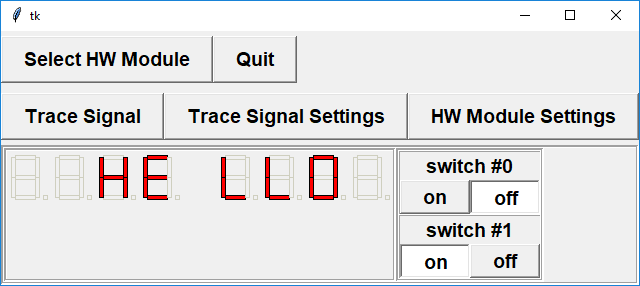

Lab 8: A Scrolling Message
- Overview
In this take-home lab, you will create a program to display a scrolling message on the 7-segment displays of the DAQ. There are two opportunities for bonus marks in this lab, allowing you to earn up to 125%. Note, however, that the bonus marks will not allow you to get more than 100% on your "overall" lab mark, though it will help you to improve your marks of earlier labs (e.g. lab 7, 6, 5, ...).
Learning Goals:
- To write a program in C that displays a scrolling message on LED displays
- To write non-digit characters to 7-segment displays
- To practice reading from switches (digital inputs) as control device
Overview
You will write a program in C that displays a message on the LED screen and scrolls this message across the LED screen. Note that the term LED screen is used to refer to a number of 7-segment LED displays arranged in a row. This lab has a required part (to earn up to 100%) and a bonus part (added functionality) to earn up to 125% on this lab. The program must work to earn the bonus marks.
IMPORTANT: This lab is different from previous C programming labs, in that you can do this lab at home, i.e. you are not required to attend your lab section to do this lab (please see the "Lab Access" section below). Everybody has the same programming assignment and the same due date, as posted on Connect.
Plagiarism: Since you will be doing this lab at home, some of you may be tempted to copy the work of somebody else, and submit it as your own. We have various tools to check for copying, so it is much better to get a low mark for this lab, rather than risk the consequences of plagiarism (i.e. getting a zero, up to getting suspended from UBC). Note that both the person copying the code and the person allowing his/her code to be copied will both face the penalties of plagiarism.
While you are allowed to discuss the design/algorithm for your programs, the safest way to avoid "accidentally" copying someone else's code is to not look at someone else's code, or to allow them to look at your code. In addition, if you are working in the lab, please make sure that you delete your code from the computer after you are done, to ensure nobody else copies it. Even if somebody copies your code without your consent or knowledge, you may still be responsible.
If you are having problems with your program which you cannot resolve, then it is best to talk to one of the TAs or the instructor. In addition to the usual office hours, TAs will be available during many of the regularly scheduled lab sessions, as noted below under Lab Access.
Lab Access
In order to develop and test your program, you will have the following options:- use the DAQ library/simulator on your own computer;
- use the DAQ library/simulator on the computers in the lab (CEME2212);
- use the DAQ library and the real hardware module in the lab (CEME2212).
The lab room CEME2212 is open and usually available 24 hours a day, unless otherwise posted. Please note that the CEME building is not necessarily open 24 hours. If you are in the lab after the building closes, please have appropriate ID to verify your status.
In addition, there will be scheduled TA office hours during the week, where TAs will be available to answer any questions, and to provide a hardware module if desired. Please see the schedule posted on Connect.